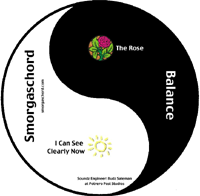

The First Ten Years
September 2011. Art: Patti Schank. Collection of 24 best songs from our first decade.
Songs (with original CD; composer(s) & lyricist(s) / arranger(s)) and soloists:
- She Needs Me (RDA; Carothers / Gill-Zable-Hamel-Whitfield), solo by Bill Anderson
- Symphony no. 5 in C-minor (RDA; Beethoven-Seuss / Zable)
- Leave It (RDA; Squire-Rabin-Horn / Buoka-Whitfield)
- The Rose (Balance; McBroom / Whitfield-Gill), solos by Jen and Mia
- Chances (Jammin'; Zeiler / Whitfield), solo by Mia
- How Sweet It Is (RDA; Holland-Dozier-Holland / Sharon-Schank), solo by Jennifer Gill
- Drift Away (RDA; Williams / Sharon-Dietz), solo by Larry Hamel
- Take a Chance on Me (I Can't Believe; Andersson / Whitfield-Sharon-Campbell), solos in order: Mia and Jen
- So Far Away (RDA; King / Sharon-Schank), solo by Patti Schank
- I Feel Good (I Can't Believe; Wright-Brown / Sharon), solo by Jennifer
- Mon Coeur (Jammin'; Chase-di Lasso)
- Kiss from a Rose (Jammin'; Seal / Yool), solo by Jennifer
- Orinoco Flow (I Can't Believe; Ryan / Pogue), solo by Patti
- Il Est Bel Et Bon (Jammin'; Passerau)
- Help (RDA; Lennon / Whitfield), solo by Mia Whitfield
- Icarus (Jammin'; Towner-Rosen / Rosen-Pogue), solo by Jennifer
- You're the Inspiration (RDA; Cetera-Foster / Zable), solo by Patti Schank
- If I Only Had a Brain (I Can't Believe; Arlen-Harburg / Ryan), solo by Bill
- Chili Con Carne (Jammin'; Edenroth / Pogue)
- One Love, One World (Jammin'; Raymo-Jarrett / Martin), solo by Bill
- It Could Happen To You (Jammin'; Burke-Van Heusen / K. C.)
- I Can See Clearly Now (Balance; Nash-Cliff-Hanson / Whitfield), solo by Larry
- Tracks of My Tears (I Can't Believe; Moore-Robinson-Tarplin / Pogue), solo byPatti
- Good Vibrations (Jammin'; Wilson-Love / Whitfield), solo by Jennifer
Recommended Daily A Cappella

November 2010. Sound engineering: Patti Schank & Harold Zable. Art: Patti Schank.
Songs (with composer(s) & lyricist(s) / arranger(s)) and soloists:
- Leave It (Squire-Rabin-Horn / Buoka-Whitfield)
- She Needs Me (Carothers / Gill-Zable-Hamel-Whitfield), solo by Bill Anderson
- So Far Away (King / Sharon-Schank), solo by Patti Schank
- Symphony no. 5 in C-minor (Beethoven-Seuss / Zable)
- Help (Lennon / Whitfield), solo by Mia Whitfield
- How Sweet It Is (Holland-Dozier-Holland / Sharon-Schank), solo by Jennifer Gill
- Doctor Who (Grainer / Zable)
- You're the Inspiration (Cetera-Foster / Zable), solo by Patti Schank
- I Could Write a Book (Rodgers-Hart / Sharon-Raugh), solo by Bill Anderson
- Only One (Taylor / Martosko-Schank-Whitfield), solo by Larry Hamel
- Gilligan's Island (Schwartz-Wyle / Zable)
- Personal Penguin (Boynton-Zable / Zable), solo by Harold Zable
- Star Spangled Banner (Smith-Key / Barnes)
- Siyahamba (Traditional South African Folk Song)
- Drift Away (Williams / Sharon-Dietz), solo by Larry Hamel
Balance

January 2006, demo CD. Sound engineering: Buddy Saleman at Protrero Post studio. Art: Patti Schank.
Songs (with composer(s) & lyricist(s) / arranger(s)) and soloists:
- The Rose (McBroom / Whitfield-Gill), solos by Jen and Mia
- I Can See Clearly Now (Nash-Cliff-Hanson / Whitfield), solo by Larry
Jammin'
December 2004. Sound engineering, art: Patti Schank.
Songs (with composer(s) & lyricist(s) / arranger(s)) and soloists:

- Good Vibrations (Wilson-Love / Whitfield), solo by Jennifer
- Chances (Zeiler / Whitfield), solo by Mia
- Icarus (Towner-Rosen / Rosen-Pogue), solo by Jennifer
- Chili Con Carne (Edenroth / Pogue)
- Mon Coeur (Chase-di Lasso)
- O Occhi Manza Mia (Chase-di Lasso)
- It Could Happen To You (Burke-Van Heusen / K. C.)
- I Can See Clearly Now (Nash-Cliff-Hanson / Whitfield), solo by Larry
- Il Est Bel Et Bon (Passerau)
- Africa (Paich-Porcaro / Crenshaw-Yool-Whitfield), solo by Bill
- Only You (Clarke / Sharon-Raugh), solo by Mia
- Little Red Riding Hood (Blackwell / Raugh-Sharon)
- Kiss from a Rose (Seal / Yool), solo by Jennifer
- One Love, One World (Raymo-Jarrett / Martin), solo by Bill
I Can't Believe I Sang the Whole Thing

December 2002. Sound engineering: Mike Pogue. Art: Patti Schank.
Songs (with composer(s) & lyricist(s) / arranger(s)) and soloists:
- Steppin Out (Berlin / Sharon), solos in order: Mike, Bill, Patti, Mia, Jennifer
- Take a Chance on Me (Andersson / Whitfield-Sharon-Campbell), solos in order: Mia and Jen
- If I Only Had a Brain (Arlen-Harburg / Ryan), solo by Bill
- Over the Rainbow (Arlen-Harburg / Morse-Pogue), solo by Patti
- I Feel Good (Wright-Brown / Sharon), solo by Jennifer
- Tracks of My Tears (Moore-Robinson-Tarplin / Pogue), solo byPatti
- Since First I Saw Your Face (Ford / Leavitt)
- Come Again Sweet Love (Dowland)
- Blue Moon (Rogers-Hart / Sharon), solos in order: Jennifer, Patti, Mia, Bill
- 409 (Love-Wilson / Pogue), solo by Mike
- Orinoco Flow (Ryan / Pogue), solo by Patti
- Maria (Destri / Liwanag)
- Summer Nights (Casey-Jacobs / Whitfield), solos by Bill and Jennifer
- And So It Goes (Joel / Shaw-Yool)
- Faith (Michael / Sharon), solo by Mia
- It Could Happen to You (Burke-Van Heusen / K. C.)
- Irish Blessing (Gray)
Samples
Recommended Daily A cappella (2010 CD)
Balance (2006 CD)
Jammin' (2004 CD)
I Can't Believe I Sang the Whole Thing (2002 CD)